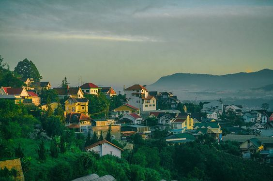
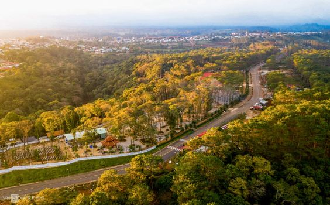

Du lịch Tây Nguyên thì chỉ có Đà Lạt? Lên Tây Nguyên là chỉ có rừng núi, tiếng cồng chiêng, thác nước hùng vĩ, nhà sàn,…? Không, không hề bạn nhé! Vùng đất cao nguyên hấp dẫn này còn đang “giấu” rất nhiều điểm đến đẹp hấp dẫn đấy! Nếu đã nghe đến hồ Tà Đùng, Bảo tàng cà phê thế giới, thác K50,… thì bạn biết Tây Nguyên hấp dẫn thế nào rồi đúng không?
Đi Đà Lạt mãi rồi, sao không thử một lần “quẹo lựa” các địa điểm lân cận và trải nghiệm cảm giác khám phá mới lạ nhỉ? Vẫn có không khí lạnh, cây xanh, thiên nhiên trong lành, và đảm bảo là mê chữ ê kéo dài đấy nhé! ? Lướt ngay xuống dưới và cùng KKday khám phá nào!???
Nằm ở khu vực miền Trung nước ta, Tây Nguyên có năm tỉnh thành, xếp theo vị trí từ Bắc xuống Nam gồm: Kon Tum, Gia Lai, , Đắk Lắk, Đắk Nông, Lâm Đồng. Nhờ sở hữu đất đỏ Bazan màu mỡ, Tây Nguyên là nơi sản xuất cacao, cà phê, hồ tiêu, dâu tằm, cao su, điều,… Đây là nơi trồng cao su lớn thứ 2 nước ta (sau Đông Nam Bộ), và cũng được xem là mái nhà miền Trung, có chức năng phòng hộ rất lớn.
Thời gian hợp lý nhất để khám phá Tây Nguyên trong khoảng từ tháng 12 đến 4 hàng năm. Những tháng đầu năm, nơi đây có tiết trời khá mát mẻ, thêm phần hoa cỏ tốt tươi vào mùa xuân khiến mảnh đất vùng cao càng thêm hấp dẫn.

Máy bay và xe khách là hai cách di chuyển tiện lợi, phổ biến. Vé máy bay từ Hà Nội hoặc Thành Phố Hồ Chí Minh đến Gia Lai, Buôn Ma Thuột dao động từ 1 triệu (nếu bạn săn được vé rẻ) đến 2 triệu đồng cho vé khứ hồi hạng phổ thông. So với máy bay, xe khách chắc chắn giúp bạn tiết kiệm hơn, nhưng cũng tiêu tốn thời gian và công sức di chuyển. Nếu đi xe, bạn hãy đi chuyến đêm để ngủ một giấc là mở mắt thấy Tây Nguyên luôn nhé! ☺️
Vùng Tây Nguyên gồm 5 tỉnh Kon Tum, Gia Lai, Đắk Lắk, Đắk Nông và Lâm Đồng. Du lịch đến các tỉnh Tây Nguyên bạn không chỉ tham quan các danh lam thắng cảnh đẹp mà còn trải nghiệm được cuộc sống của đồng bào các dân tộc như Ba Na, Gia Rai, Ê đê, Cơ Ho, Mạ, Xơ Đăng, Mơ Nông… và thưởng thức những món ăn địa phương đặc sắc. Ngoài ra, khí hậu mát mẻ ôn hòa và con người thân thiện nơi đây sẽ níu bước chân du khách và mong một lần trở lại.

DU LỊCH BẢO LỘC - THÁC DAMBRI - HỒ TÀ ĐÙNG - NẬM NUNG

DU LỊCH BUÔN MA THUỘT - BUÔN ĐÔN - PLEIKU - KOMTUM - MĂNG ĐEN

DU LỊCH GIA NGHĨA - HỒ TÀ ĐÙNG [2N1D]

DU LỊCH BUÔN MA THUỘT - KHỞI HÀNH TỪ CẦN THƠ

DU LỊCH BUÔN MÊ THUỘT - KHỞI HÀNH TỪ CẦN THƠ [TẾT DƯƠNG LỊCH]CẦN THƠ - BUÔN MA THUỘT

DU LỊCH BẢO LỘC - THÁC DAMBRI - HỒ TÀ ĐÙNG - KHU BẢO TỒN THIÊN NHIÊN NẬM NUNG [TẾT DƯƠNG LỊCH]